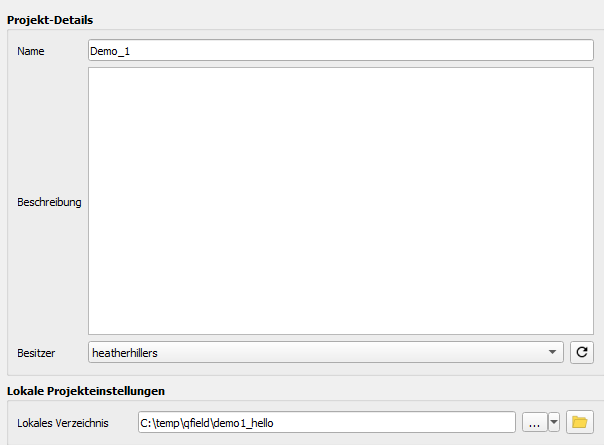
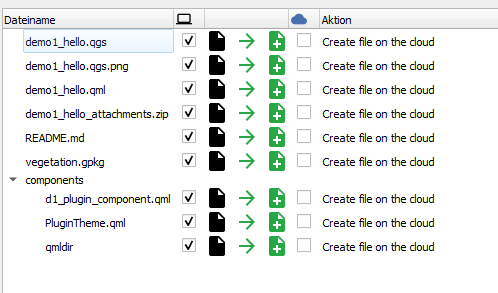
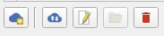
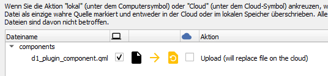

Deploying the demo1_hello Project in QField
- Copy ${ROOT}\qfield_vegetation_monitoring\demo1_hello to ${ROOT}\projects\demo1_hello
- Open the project in QGIS.
- You should see only a single layer (plots) with a few points in it. This is the selection layer for the plugin.
- Upload the project to QFieldCloud using the QField Sync plugin.
- Create a new project

- Create a new empty project

- Give it a name and keep the local project directory as your development directory under ${ROOT} 
- Upload files. 
- Create a new project
- Load the project in QField for Windows
- The camera icon on the right is used to open and close the plugin. Go ahead. Open and close it.
- Check these log messages and make sure you see our nice debug messages and not any errors.

- Done. You have deployed.
Updating the Project
When you update the plugin, your users use the Synchronize button to get updates, just like with the project.
- Open the plugin by clicking on the camera and note the title text. We will update the project by changing the text.

- Open ${ROOT}\projects\demo1_hello\components\d1_plugin_component.qml in your editor.
- Find the text you see on the screen. It should be around line 26.
Text { text: "Vegetation Monitoring: Plugin Component" color: PluginTheme.green font.pixelSize: 20 horizontalAlignment: Text.AlignHCenter anchors.centerIn: parent } - Change this text to something else.
- In QGIS, use the Sync button in the QField Sync plugin to synchronize the project. 
- QField Sync should detect the change and upload the new version of the file. 
- Go to QField and use the Synchronize button to update the project and its plugin.
- If you don't see your change immediately, it may be necessary to restart QField.
Deploying and Updating the demo1_hello Project in Development
If you try to use this protocol in your development process, you will completely lose your mind. Until you have a deliverable plugin, set it up as a local QField project. I'm too embarrassed to say how long I dragged myself through the synchronization process before I got smart.
- Get your path to your desktop QField. Mine is C:\Program Files\QField\usr\bin\qfield.exe, but yours may be different.
- QField is developing rapidly. Keep your QField updated from the releases page: https://github.com/opengisch/qfield/releases
- Run QField from the command line to get output on console.log and console.error messages. Call it with the path to your project. No QField Sync packaging is necessary.
"C:\Program Files\QField\usr\bin\qfield.exe" %ROOT%\projects\demo1_hello\demo1_hello.qgs - When you update your code, just close QField and run the command again.